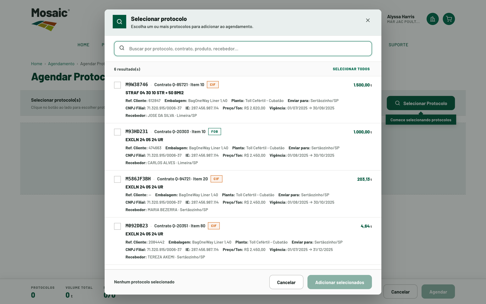

Jornada 4 de 5 · Agendamento
Agendar Protocolo
Dar continuidade após a criação do protocolo: consultar saldo, definir volumes e programar entregas.
4.865
protocolos
2,09
protoc. por contrato
~6
cliques · novo fluxo
2.328
contratos/cotações
 1
2
1
2

Cenário atual
Como acontece hoje — esforço, pessoas e sistemas.
Fluxo atual
- Protocolo é criado no Mosaic Direct
- O agendamento segue administrado no Scheduling
- Customer Service realiza etapas manuais
- Saldo e planejamento não ficam totalmente disponíveis ao cliente
- A jornada se rompe entre o portal e a operação interna
Esforço & contexto
Interações: Continuação manual no Scheduling A validarTempo: Depende do time interno
Pessoas
ClienteCustomer Service
Sistemas
Mosaic DirectScheduling
Repetição
A cada agendamento de protocolo.
Principais problemas
- Ruptura entre Mosaic Direct e Scheduling
- Etapas manuais do Customer Service
- Saldo e planejamento pouco disponíveis ao cliente
Nova experiência
Como fica no Mosaic Direct 2.0.
O cliente seleciona protocolos, consulta saldos, define volumes, escolhe datas/semanas/roteiros, confirma o agendamento e acompanha a execução — mesmo padrão de modais e roteiro do Agendar Contrato.
O que muda em relação ao fluxo atual
- Reduz a ruptura entre portal e Scheduling
- Continuidade da jornada no mesmo ambiente
Benefícios
Para o cliente
- Continua a jornada sem mudar de canal
- Saldo e volumes visíveis ao definir a entrega
Para a Mosaic
- Menos etapas manuais no Scheduling
- Planejamento mais estruturado na origem
Dados & pendências
Dados relacionados Confirmado
- 4.865 protocolos
- 2.328 contratos/cotações
- continuidade da jornada de criação
Pendências A validar
- Regras de saldo e limites por protocolo
- Integração de agendamento com o Scheduling